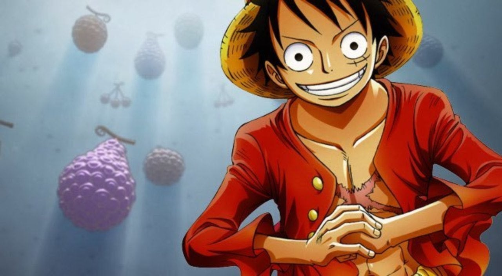
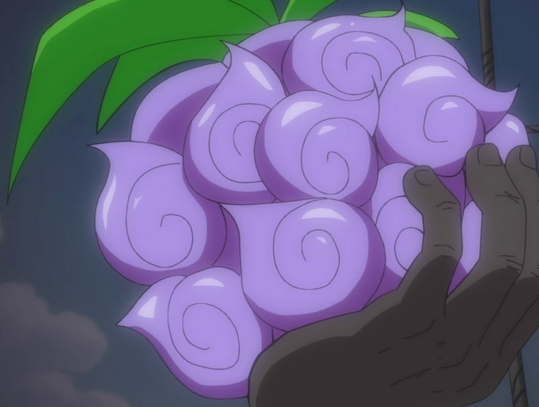

Fruit |
Type |
Utilisateur |
Pouvoir |
Apparence |
Démonstration |
|---|---|---|---|---|---|
| Yami Yami no Mi | Logia | Barbe Noire | Le Yami Yami no Mi, ou Fruit des Ténèbres en français, est un Fruit du Démon de type Logia qui permet à son utilisateur de produire, devenir et contrôler les ténèbres, le transformant ainsi en Homme-Ténèbres (闇やみ人ニン間ゲン, Yami Ningen)"Suite" |  | |
| Uo Uo no Mi | Zoan Mythique | Kaido | Kaido est un dragon et l'une de leurs plus grandes capacités est de pouvoir manipuler la foudre à volonté. Sous sa forme de dragon, Kaido est énorme. Sa peau est presque impénétrable, ce qui est tout simplement incroyable. "Suite" | ||
| Goro Goro no Mi | Logia | Enel | Le Goro Goro no Mi, aussi appelé Fulguro-Fruit en français, est un Fruit du Démon de type Logia qui permet à son utilisateur de se transformer, de produire à volonté ainsi que contrôler l'électricité, faisant du mangeur un Homme-Foudre (雷人間 Kaminari Ningen). Ce fruit fut mangé par Enel."Suite" |  |
|
| Pika Pika no Mi | Logia | Amiral Kizaru | Le Pika Pika no Mi, ou Fruit du Flash/Fruit Luminescent en français, est un Fruit du Démon de type Logia mangé par Borsalino, mieux connu sous le nom d'Amiral Kizaru. Ce Fruit permet à l'utilisateur de créer, contrôler et de devenir de la lumière, faisant de l'utilisateur un Homme-Lumière (光人間, Hikari Ningen). Il lui permet aussi de se déplacer à la vitesse de la lumière, ce qui fait de l'utilisateur l'homme théoriquement le plus rapide de tout One Piece, et de voyager par des moyens de réflexion (par des miroirs par exemple)."Suite" | ||
| Gura Gura no Mi | Paramecia | Barbe Blanche | Le Gura Gura no Mi ou Fruit du Tremblement en français, est un Fruit du Démon de type Paramecia qui permet de transformer son utilisateur en un Homme Tremblement de Terre (震動人間, Shindō Ningen).[2] Garp explique que le pouvoir de Barbe Blanche lui permet de manipuler les vagues sismiques et de générer des tremblements de terre en "fissurant" l'air ambiant."Suite" |